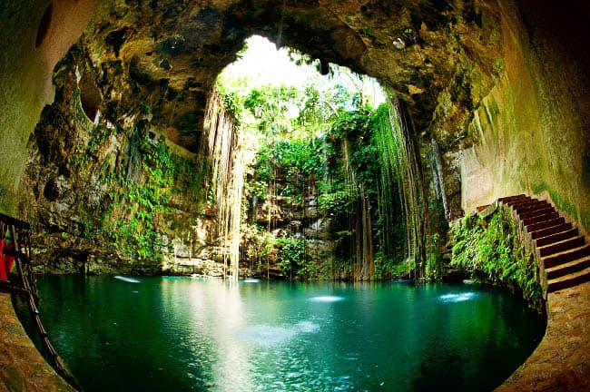

5 LUGARES QUE EU GOSTARIA DE CONHECER
por Raul Furtado
Cenote dos Ojos, Tulum

BREVE DESCRIÇÃO:
O Cenote dos Ojos fica na Carretera Federal que liga as localidades de Playa del Carmen a Tulum.
A entrada é quase em frente ao parque Xel-Há.
PROXIMO LUGAR!